Scatter Plots / Bubble Plots
regplot.RdFunction to create scatter plots / bubble plots based on meta-regression models.
regplot(x, ...)
# S3 method for class 'rma'
regplot(x, mod, pred=TRUE, ci=TRUE, pi=FALSE, shade=TRUE,
xlim, ylim, predlim, olim, xlab, ylab, at, digits=2L,
transf, atransf, targs, level=x$level,
pch, psize, plim=c(0.5,3), col, bg, slab,
grid=FALSE, refline, label=FALSE, offset=c(1,1), labsize=1,
lcol, lwd, lty, legend=FALSE, xvals, ...)
# S3 method for class 'regplot'
points(x, ...)Arguments
- x
an object of class
"rma.uni","rma.mv", or"rma.glmm"including one or multiple moderators (or an object of class"regplot"forpoints).- mod
either a scalar to specify the position of the moderator variable in the model or a character string to specify the name of the moderator variable.
- pred
logical to specify whether the (marginal) regression line based on the moderator should be added to the plot (the default is
TRUE). Can also be an object frompredict. See ‘Details’.- ci
logical to specify whether the corresponding confidence interval bounds should be added to the plot (the default is
TRUE).- pi
logical to specify whether the corresponding prediction interval bounds should be added to the plot (the default is
FALSE).- shade
logical to specify whether the confidence/prediction interval regions should be shaded (the default is
TRUE). Can also be a two-element character vector to specify the colors for shading the confidence and prediction interval regions (if shading only the former, a single color can also be specified).- xlim
x-axis limits. If unspecified, the function sets the x-axis limits to some sensible values.
- ylim
y-axis limits. If unspecified, the function sets the y-axis limits to some sensible values.
- predlim
argument to specify the limits of the (marginal) regression line. If unspecified, the limits are based on the range of the moderator variable.
- olim
argument to specify observation/outcome limits. If unspecified, no limits are used.
- xlab
title for the x-axis. If unspecified, the function sets an appropriate axis title.
- ylab
title for the y-axis. If unspecified, the function sets an appropriate axis title.
- at
position of the y-axis tick marks and corresponding labels. If unspecified, the function sets the tick mark positions/labels to some sensible values.
- digits
integer to specify the number of decimal places to which the tick mark labels of the y-axis should be rounded. When specifying an integer (e.g.,
2L), trailing zeros after the decimal mark are dropped for the y-axis labels. When specifying a numeric value (e.g.,2), trailing zeros are retained.- transf
argument to specify a function to transform the observed outcomes, predicted values, and confidence/prediction interval bounds (e.g.,
transf=exp; see also transf). If unspecified, no transformation is used.- atransf
argument to specify a function to transform the y-axis labels (e.g.,
atransf=exp; see also transf). If unspecified, no transformation is used.- targs
optional arguments needed by the function specified via
transforatransf.- level
numeric value between 0 and 100 to specify the confidence/prediction interval level (see here for details). The default is to take the value from the object.
- pch
plotting symbol to use for the observed outcomes. By default, an open circle is used. Can also be a vector of values. See
pointsfor other options.- psize
numeric value to specify the point sizes for the observed outcomes. If unspecified, the point sizes are a function of the model weights. Can also be a vector of values. Can also be a character string (either
"seinv"or"vinv") to make the point sizes proportional to the inverse standard errors or inverse sampling variances.- plim
numeric vector of length 2 to scale the point sizes (ignored when a numeric value or vector is specified for
psize). See ‘Details’.- col
character string to specify the (border) color of the points. Can also be a vector.
- bg
character string to specify the background color of open plot symbols. Can also be a vector.
- slab
vector with labels for the \(k\) studies. If unspecified, the function tries to extract study labels from
x.- grid
logical to specify whether a grid should be added to the plot. Can also be a color name for the grid.
- refline
optional numeric value to specify the location of a horizontal reference line that should be added to the plot.
- label
argument to control the labeling of the points (the default is
FALSE). See ‘Details’.- offset
argument to control the distance between the points and the corresponding labels. See ‘Details’.
- labsize
numeric value to control the size of the labels.
- lcol
optional vector of (up to) four elements to specify the color of the regression line, of the confidence interval bounds, of the prediction interval bounds, and of the horizontal reference line.
- lty
optional vector of (up to) four elements to specify the line type of the regression line, of the confidence interval bounds, of the prediction interval bounds, and of the horizontal reference line.
- lwd
optional vector of (up to) four elements to specify the line width of the regression line, of the confidence interval bounds, of the prediction interval bounds, and of the horizontal reference line.
- legend
logical to specify whether a legend should be added to the plot (the default is
FALSE). Can also be a keyword to specify the position of the legend (seelegend).- xvals
optional numeric vector to specify the values of the moderator for which predicted values should be computed. Needs to be specified when passing an object from
predictto thepredargument. See ‘Details’.- ...
other arguments.
Details
The function draws a scatter plot of the values of a moderator variable in a meta-regression model (on the x-axis) against the observed effect sizes or outcomes (on the y-axis). The regression line from the model (with corresponding confidence interval bounds) is added to the plot by default. These types of plots are also often referred to as ‘bubble plots’ as the points are typically drawn in different sizes to reflect their precision or weight in the model.
If the model includes multiple moderators, one must specify via argument mod either the position (as a number) or the name (as a string) of the moderator variable to place on the x-axis. The regression line then reflects the ‘marginal’ relationship between the chosen moderator and the effect sizes or outcomes (i.e., all other moderators except the one being plotted are held constant at their means).
By default (i.e., when psize is not specified), the size of the points is a function of the square root of the model weights. This way, their area is proportional to the weights. However, the point sizes are rescaled so that the smallest point size is plim[1] and the largest point size is plim[2]. As a result, their relative sizes (i.e., areas) no longer exactly correspond to their relative weights. If exactly relative point sizes are desired, one can set plim[2] to NA, in which case the points are rescaled so that the smallest point size corresponds to plim[1] and all other points are scaled accordingly. As a result, the largest point may be very large. Alternatively, one can set plim[1] to NA, in which case the points are rescaled so that the largest point size corresponds to plim[2] and all other points are scaled accordingly. As a result, the smallest point may be very small. To avoid the latter, one can also set plim[3], which enforces a minimal point size.
One can also set psize to a scalar (e.g., psize=1) to avoid that the points are drawn in different sizes. One can also specify the point sizes manually by passing a vector of the appropriate length to psize. Finally, one can also set psize to either "seinv" or "vinv" to make the point sizes proportional to the inverse standard errors or inverse sampling variances.
With the label argument, one can control whether points in the plot will be labeled. If label="all" (or label=TRUE), all points in the plot will be labeled. If label="ciout" or label="piout", points falling outside of the confidence/prediction interval will be labeled. Alternatively, one can set this argument to a logical or numeric vector to specify which points should be labeled. The labels are placed above the points when they fall above the regression line and otherwise below. With the offset argument, one can adjust the distance between the labels and the corresponding points. This can either be a single numeric value, which is used as a multiplicative factor for the point sizes (so that the distance between labels and points is larger for larger points) or a numeric vector with two values, where the first is used as an additive factor independent of the point sizes and the second again as a multiplicative factor for the point sizes. The values are given as percentages of the y-axis range. It may take some trial and error to find two values for the offset argument so that the labels are placed right next to the boundary of the points. With labsize, one can control the size of the labels.
One can also pass an object from predict to the pred argument. This can be useful when the meta-regression model reflects a more complex relationship between the moderator variable and the effect sizes or outcomes (e.g., when using polynomials or splines) or when the model involves interactions. In this case, one also needs to specify the xvals argument. See ‘Examples’.
Note
For certain types of models, it may not be possible to draw the prediction interval bounds (if this is the case, a warning will be issued).
For argument slab and when specifying vectors for arguments pch, psize, col, bg, and/or label (for a logical vector), the variables specified are assumed to be of the same length as the data passed to the model fitting function (and if the data argument was used in the original model fit, then the variables will be searched for within this data frame first). Any subsetting and removal of studies with missing values is automatically applied to the variables specified via these arguments.
If the outcome measure used for creating the plot is bounded (e.g., correlations are bounded between -1 and +1, proportions are bounded between 0 and 1), one can use the olim argument to enforce those limits (the observed outcomes and confidence/prediction intervals cannot exceed those bounds then).
Value
An object of class "regplot" with components:
- slab
the study labels
- ids
the study ids
- xi
the x-axis coordinates of the points that were plotted.
- yi
the y-axis coordinates of the points that were plotted.
- pch
the plotting symbols of the points that were plotted.
- psize
the point sizes of the points that were plotted.
- col
the colors of the points that were plotted.
- bg
the background colors of the points that were plotted.
- label
logical vector indicating whether a point was labeled.
Note that the object is returned invisibly. Using points.regplot, one can redraw the points (and labels) in case one wants to superimpose the points on top of any elements that were added manually to the plot (see ‘Examples’).
References
Thompson, S. G., & Higgins, J. P. T. (2002). How should meta-regression analyses be undertaken and interpreted? Statistics in Medicine, 21(11), 1559–1573. https://doi.org/10.1002/sim.1187
Viechtbauer, W. (2010). Conducting meta-analyses in R with the metafor package. Journal of Statistical Software, 36(3), 1–48. https://doi.org/10.18637/jss.v036.i03
See also
Examples
### copy BCG vaccine data into 'dat'
dat <- dat.bcg
### calculate log risk ratios and corresponding sampling variances
dat <- escalc(measure="RR", ai=tpos, bi=tneg, ci=cpos, di=cneg, data=dat)
############################################################################
### fit mixed-effects model with absolute latitude as a moderator
res <- rma(yi, vi, mods = ~ ablat, data=dat)
res
#>
#> Mixed-Effects Model (k = 13; tau^2 estimator: REML)
#>
#> tau^2 (estimated amount of residual heterogeneity): 0.0764 (SE = 0.0591)
#> tau (square root of estimated tau^2 value): 0.2763
#> I^2 (residual heterogeneity / unaccounted variability): 68.39%
#> H^2 (unaccounted variability / sampling variability): 3.16
#> R^2 (amount of heterogeneity accounted for): 75.62%
#>
#> Test for Residual Heterogeneity:
#> QE(df = 11) = 30.7331, p-val = 0.0012
#>
#> Test of Moderators (coefficient 2):
#> QM(df = 1) = 16.3571, p-val < .0001
#>
#> Model Results:
#>
#> estimate se zval pval ci.lb ci.ub
#> intrcpt 0.2515 0.2491 1.0095 0.3127 -0.2368 0.7397
#> ablat -0.0291 0.0072 -4.0444 <.0001 -0.0432 -0.0150 ***
#>
#> ---
#> Signif. codes: 0 ‘***’ 0.001 ‘**’ 0.01 ‘*’ 0.05 ‘.’ 0.1 ‘ ’ 1
#>
### draw plot
regplot(res, mod="ablat", xlab="Absolute Latitude")
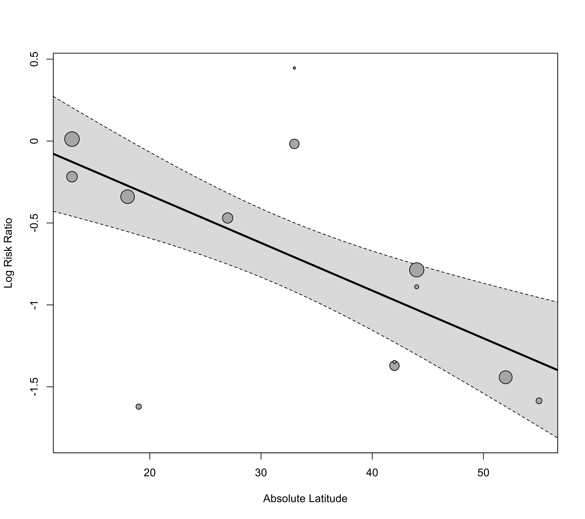
### adjust x-axis limits and back-transform to risk ratios
regplot(res, mod="ablat", xlab="Absolute Latitude", xlim=c(0,60), transf=exp)
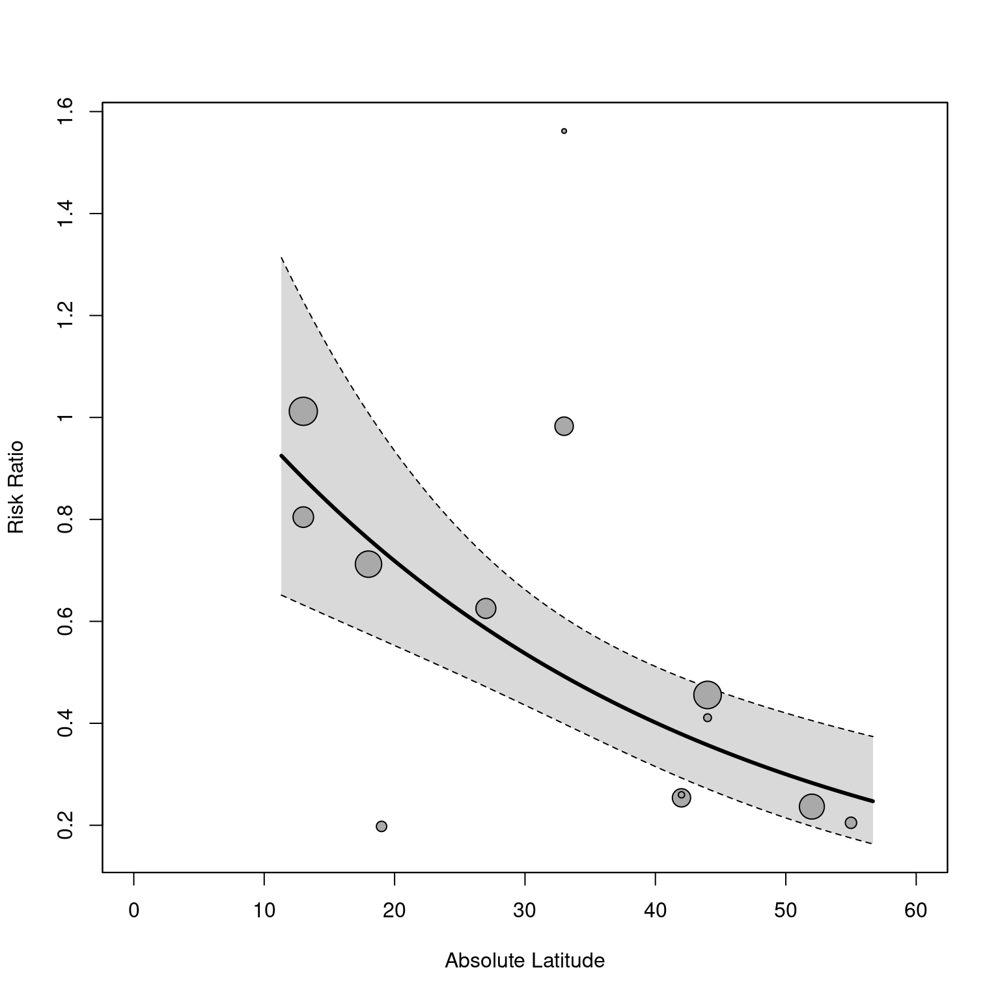
### also extend the prediction limits for the regression line
regplot(res, mod="ablat", xlab="Absolute Latitude", xlim=c(0,60), predlim=c(0,60), transf=exp)
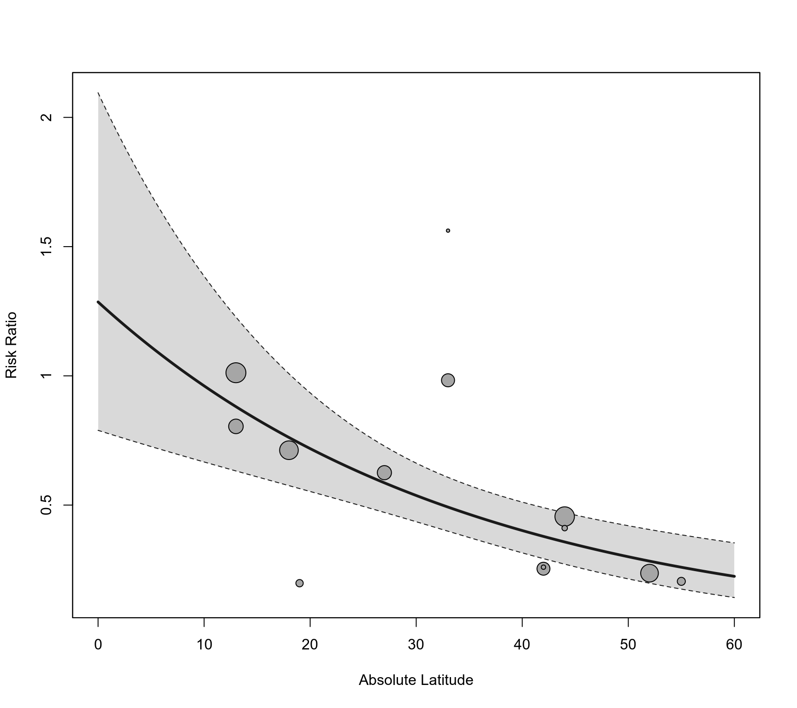
### add the prediction interval to the plot, add a reference line at 1, and add a legend
regplot(res, mod="ablat", pi=TRUE, xlab="Absolute Latitude",
xlim=c(0,60), predlim=c(0,60), transf=exp, refline=1, legend=TRUE)
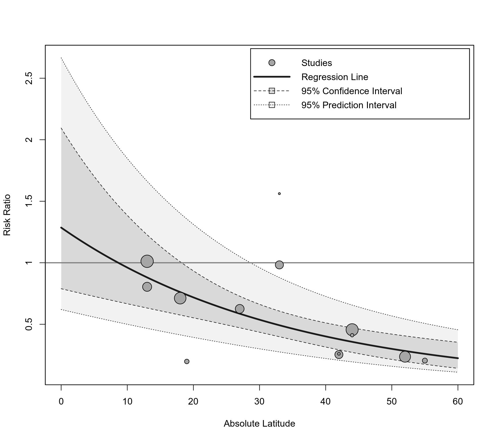
### label points outside of the prediction interval
regplot(res, mod="ablat", pi=TRUE, xlab="Absolute Latitude",
xlim=c(0,60), predlim=c(0,60), transf=exp, refline=1, legend=TRUE,
label="piout", labsize=0.8)
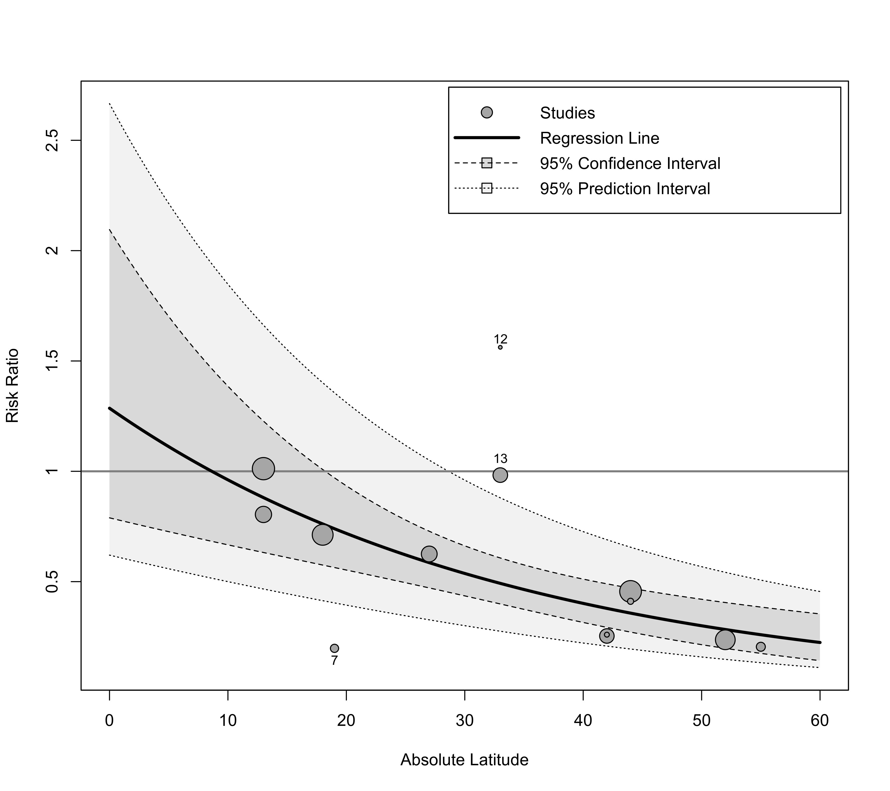
############################################################################
### fit mixed-effects model with absolute latitude and publication year as moderators
res <- rma(yi, vi, mods = ~ ablat + year, data=dat)
res
#>
#> Mixed-Effects Model (k = 13; tau^2 estimator: REML)
#>
#> tau^2 (estimated amount of residual heterogeneity): 0.1108 (SE = 0.0845)
#> tau (square root of estimated tau^2 value): 0.3328
#> I^2 (residual heterogeneity / unaccounted variability): 71.98%
#> H^2 (unaccounted variability / sampling variability): 3.57
#> R^2 (amount of heterogeneity accounted for): 64.63%
#>
#> Test for Residual Heterogeneity:
#> QE(df = 10) = 28.3251, p-val = 0.0016
#>
#> Test of Moderators (coefficients 2:3):
#> QM(df = 2) = 12.2043, p-val = 0.0022
#>
#> Model Results:
#>
#> estimate se zval pval ci.lb ci.ub
#> intrcpt -3.5455 29.0959 -0.1219 0.9030 -60.5724 53.4814
#> ablat -0.0280 0.0102 -2.7371 0.0062 -0.0481 -0.0080 **
#> year 0.0019 0.0147 0.1299 0.8966 -0.0269 0.0307
#>
#> ---
#> Signif. codes: 0 ‘***’ 0.001 ‘**’ 0.01 ‘*’ 0.05 ‘.’ 0.1 ‘ ’ 1
#>
### plot the marginal relationships
regplot(res, mod="ablat", xlab="Absolute Latitude")
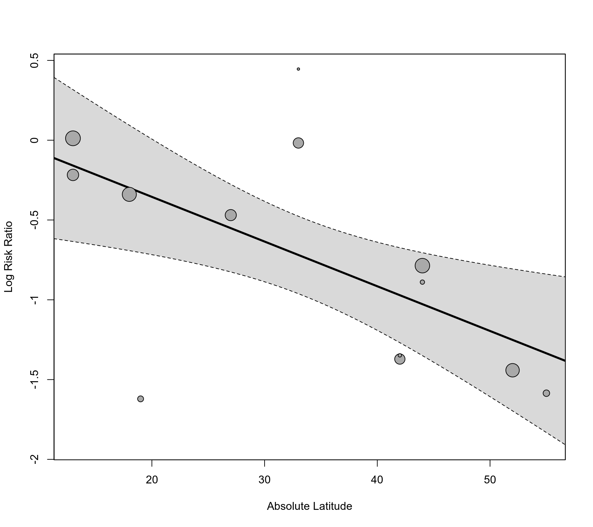
regplot(res, mod="year", xlab="Publication Year")
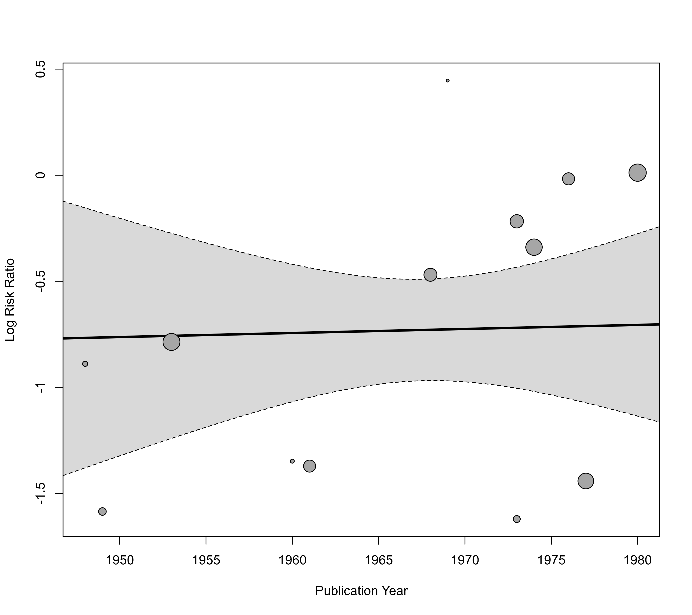
############################################################################
### fit a quadratic polynomial meta-regression model
res <- rma(yi, vi, mods = ~ ablat + I(ablat^2), data=dat)
res
#>
#> Mixed-Effects Model (k = 13; tau^2 estimator: REML)
#>
#> tau^2 (estimated amount of residual heterogeneity): 0.0806 (SE = 0.0658)
#> tau (square root of estimated tau^2 value): 0.2840
#> I^2 (residual heterogeneity / unaccounted variability): 66.62%
#> H^2 (unaccounted variability / sampling variability): 3.00
#> R^2 (amount of heterogeneity accounted for): 74.26%
#>
#> Test for Residual Heterogeneity:
#> QE(df = 10) = 28.4961, p-val = 0.0015
#>
#> Test of Moderators (coefficients 2:3):
#> QM(df = 2) = 16.9151, p-val = 0.0002
#>
#> Model Results:
#>
#> estimate se zval pval ci.lb ci.ub
#> intrcpt -0.3889 0.6285 -0.6188 0.5360 -1.6207 0.8429
#> ablat 0.0218 0.0464 0.4699 0.6385 -0.0692 0.1128
#> I(ablat^2) -0.0008 0.0007 -1.1100 0.2670 -0.0022 0.0006
#>
#> ---
#> Signif. codes: 0 ‘***’ 0.001 ‘**’ 0.01 ‘*’ 0.05 ‘.’ 0.1 ‘ ’ 1
#>
### compute predicted values using predict()
xs <- seq(0,60,length=601)
tmp <- predict(res, newmods=cbind(xs, xs^2))
### can now pass these results to the 'pred' argument (and have to specify xvals accordingly)
regplot(res, mod="ablat", pred=tmp, xlab="Absolute Latitude", xlim=c(0,60), xvals=xs)
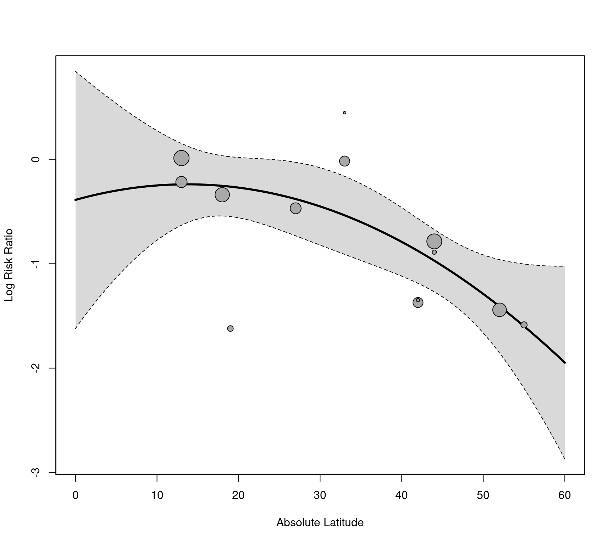
### back-transform to risk ratios and add reference line
regplot(res, mod="ablat", pred=tmp, xlab="Absolute Latitude", xlim=c(0,60), xvals=xs,
transf=exp, refline=1)
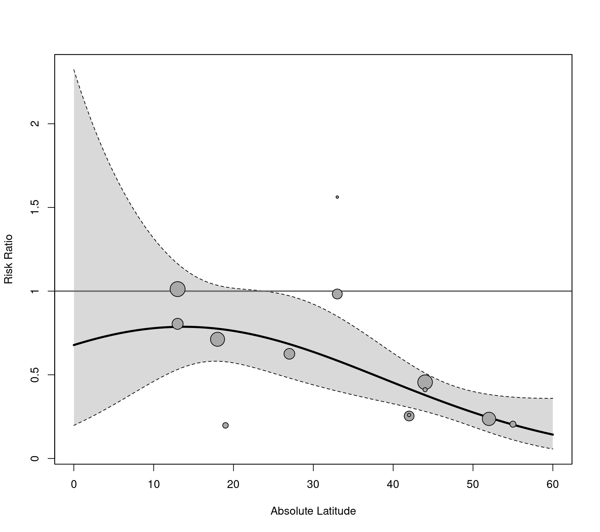
############################################################################
### fit a model with an interaction between a quantitative and a categorical predictor
### (note: just for illustration purposes; this model is too complex for this dataset)
res <- rma(yi, vi, mods = ~ ablat * alloc, data=dat)
res
#>
#> Mixed-Effects Model (k = 13; tau^2 estimator: REML)
#>
#> tau^2 (estimated amount of residual heterogeneity): 0.2465 (SE = 0.2085)
#> tau (square root of estimated tau^2 value): 0.4965
#> I^2 (residual heterogeneity / unaccounted variability): 70.49%
#> H^2 (unaccounted variability / sampling variability): 3.39
#> R^2 (amount of heterogeneity accounted for): 21.30%
#>
#> Test for Residual Heterogeneity:
#> QE(df = 7) = 20.7809, p-val = 0.0041
#>
#> Test of Moderators (coefficients 2:6):
#> QM(df = 5) = 7.4799, p-val = 0.1873
#>
#> Model Results:
#>
#> estimate se zval pval ci.lb ci.ub
#> intrcpt 0.0209 0.8027 0.0260 0.9792 -1.5525 1.5942
#> ablat -0.0183 0.0239 -0.7658 0.4438 -0.0653 0.0286
#> allocrandom 0.0068 0.9689 0.0070 0.9944 -1.8922 1.9058
#> allocsystematic 0.4711 1.2713 0.3705 0.7110 -2.0206 2.9627
#> ablat:allocrandom -0.0098 0.0279 -0.3518 0.7250 -0.0645 0.0449
#> ablat:allocsystematic -0.0125 0.0391 -0.3193 0.7495 -0.0892 0.0642
#>
#> ---
#> Signif. codes: 0 ‘***’ 0.001 ‘**’ 0.01 ‘*’ 0.05 ‘.’ 0.1 ‘ ’ 1
#>
### draw bubble plot but do not add regression line or CI
tmp <- regplot(res, mod="ablat", xlab="Absolute Latitude", xlim=c(0,60), pred=FALSE, ci=FALSE)
### add regression lines for the three alloc levels
xs <- seq(0, 60, length=100)
preds <- predict(res, newmods=cbind(xs, 0, 0, 0, 0))
lines(xs, preds$pred, lwd=3)
preds <- predict(res, newmods=cbind(xs, 1, 0, xs, 0))
lines(xs, preds$pred, lwd=3)
preds <- predict(res, newmods=cbind(xs, 0, 1, 0, xs))
lines(xs, preds$pred, lwd=3)
### add points back to the plot (so they are on top of the lines)
points(tmp)
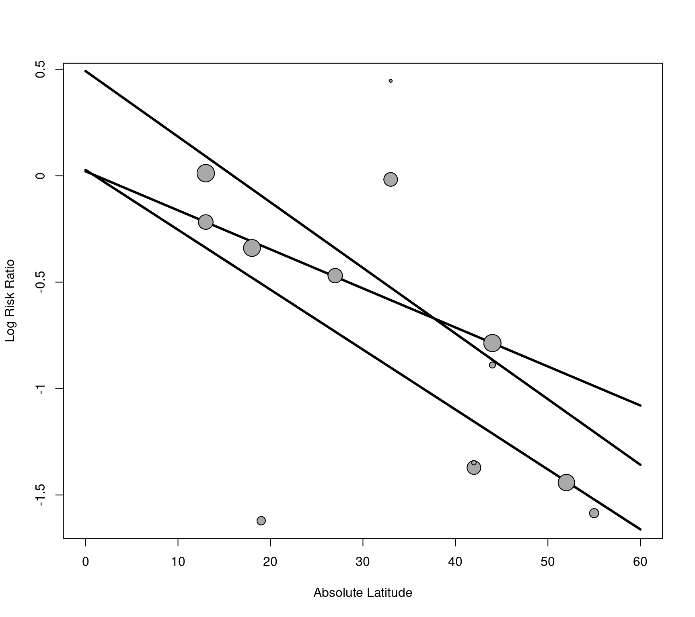
############################################################################
### an example where we place a dichotomous variable on the x-axis
### dichotomize the 'random' variable
dat$random <- ifelse(dat$alloc == "random", 1, 0)
### fit mixed-effects model with this dummy variable as moderator
res <- rma(yi, vi, mods = ~ random, data=dat)
res
#>
#> Mixed-Effects Model (k = 13; tau^2 estimator: REML)
#>
#> tau^2 (estimated amount of residual heterogeneity): 0.3184 (SE = 0.1779)
#> tau (square root of estimated tau^2 value): 0.5642
#> I^2 (residual heterogeneity / unaccounted variability): 89.92%
#> H^2 (unaccounted variability / sampling variability): 9.92
#> R^2 (amount of heterogeneity accounted for): 0.00%
#>
#> Test for Residual Heterogeneity:
#> QE(df = 11) = 138.5113, p-val < .0001
#>
#> Test of Moderators (coefficient 2):
#> QM(df = 1) = 1.8327, p-val = 0.1758
#>
#> Model Results:
#>
#> estimate se zval pval ci.lb ci.ub
#> intrcpt -0.4673 0.2574 -1.8157 0.0694 -0.9717 0.0371 .
#> random -0.4900 0.3619 -1.3538 0.1758 -1.1994 0.2194
#>
#> ---
#> Signif. codes: 0 ‘***’ 0.001 ‘**’ 0.01 ‘*’ 0.05 ‘.’ 0.1 ‘ ’ 1
#>
### draw bubble plot
regplot(res, mod="random")
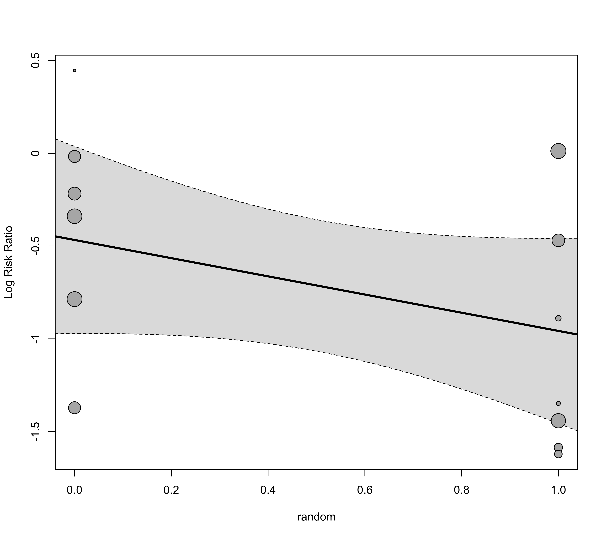
### draw bubble plot and add a nicer x-axis
regplot(res, mod="random", xlab="Method of Treatment Allocation", xaxt="n")
axis(side=1, at=c(0,1), labels=c("Non-Random", "Random"))
 ############################################################################
### an example where we place a categorical variable with more than two levels
### on the x-axis; this is done with a small trick, representing the moderator
### as a polynomial regression model
### fit mixed-effects model with a three-level factor
res <- rma(yi, vi, mods = ~ alloc, data=dat)
res
#>
#> Mixed-Effects Model (k = 13; tau^2 estimator: REML)
#>
#> tau^2 (estimated amount of residual heterogeneity): 0.3615 (SE = 0.2111)
#> tau (square root of estimated tau^2 value): 0.6013
#> I^2 (residual heterogeneity / unaccounted variability): 88.77%
#> H^2 (unaccounted variability / sampling variability): 8.91
#> R^2 (amount of heterogeneity accounted for): 0.00%
#>
#> Test for Residual Heterogeneity:
#> QE(df = 10) = 132.3676, p-val < .0001
#>
#> Test of Moderators (coefficients 2:3):
#> QM(df = 2) = 1.7675, p-val = 0.4132
#>
#> Model Results:
#>
#> estimate se zval pval ci.lb ci.ub
#> intrcpt -0.5180 0.4412 -1.1740 0.2404 -1.3827 0.3468
#> allocrandom -0.4478 0.5158 -0.8682 0.3853 -1.4588 0.5632
#> allocsystematic 0.0890 0.5600 0.1590 0.8737 -1.0086 1.1867
#>
#> ---
#> Signif. codes: 0 ‘***’ 0.001 ‘**’ 0.01 ‘*’ 0.05 ‘.’ 0.1 ‘ ’ 1
#>
### compute the predicted pooled effect for each level of the factor
predict(res, newmods=rbind(alternate=c(0,0), random=c(1,0), systematic=c(0,1)))
#>
#> pred se ci.lb ci.ub pi.lb pi.ub
#> alternate -0.5180 0.4412 -1.3827 0.3468 -1.9796 0.9437
#> random -0.9658 0.2672 -1.4896 -0.4420 -2.2554 0.3238
#> systematic -0.4289 0.3449 -1.1050 0.2472 -1.7875 0.9297
#>
### represent the three-level factor as a quadratic polynomial model
dat$anum <- as.numeric(factor(dat$alloc))
res <- rma(yi, vi, mods = ~ poly(anum, degree=2, raw=TRUE), data=dat)
res
#>
#> Mixed-Effects Model (k = 13; tau^2 estimator: REML)
#>
#> tau^2 (estimated amount of residual heterogeneity): 0.3615 (SE = 0.2111)
#> tau (square root of estimated tau^2 value): 0.6013
#> I^2 (residual heterogeneity / unaccounted variability): 88.77%
#> H^2 (unaccounted variability / sampling variability): 8.91
#> R^2 (amount of heterogeneity accounted for): 0.00%
#>
#> Test for Residual Heterogeneity:
#> QE(df = 10) = 132.3676, p-val < .0001
#>
#> Test of Moderators (coefficients 2:3):
#> QM(df = 2) = 1.7675, p-val = 0.4132
#>
#> Model Results:
#>
#> estimate se zval pval ci.lb ci.ub
#> intrcpt 0.9145 1.5854 0.5768 0.5641 -2.1929 4.0219
#> poly(anum, degree = 2, raw = TRUE)1 -1.9248 1.6208 -1.1876 0.2350 -5.1015 1.2519
#> poly(anum, degree = 2, raw = TRUE)2 0.4923 0.3871 1.2719 0.2034 -0.2663 1.2510
#>
#> ---
#> Signif. codes: 0 ‘***’ 0.001 ‘**’ 0.01 ‘*’ 0.05 ‘.’ 0.1 ‘ ’ 1
#>
### compute the predicted pooled effect for each level of the factor
### (note that these values are exactly the same as above)
pred <- predict(res, newmods=unname(poly(1:3, degree=2, raw=TRUE)))
pred
#>
#> pred se ci.lb ci.ub pi.lb pi.ub
#> 1 -0.5180 0.4412 -1.3827 0.3468 -1.9796 0.9437
#> 2 -0.9658 0.2672 -1.4896 -0.4420 -2.2554 0.3238
#> 3 -0.4289 0.3449 -1.1050 0.2472 -1.7875 0.9297
#>
### draw bubble plot, placing the linear (1:3) term on the x-axis and add a
### nicer x-axis for the three levels
regplot(res, mod=2, pred=pred, xvals=c(1:3), xlim=c(1,3), xlab="Allocation Method", xaxt="n")
axis(side=1, at=1:3, labels=levels(factor(dat$alloc)))
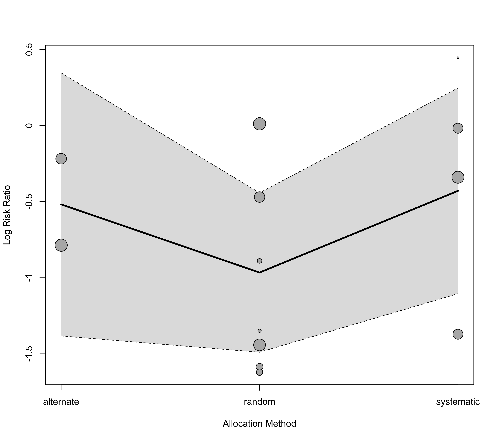
############################################################################
############################################################################
### an example where we place a categorical variable with more than two levels
### on the x-axis; this is done with a small trick, representing the moderator
### as a polynomial regression model
### fit mixed-effects model with a three-level factor
res <- rma(yi, vi, mods = ~ alloc, data=dat)
res
#>
#> Mixed-Effects Model (k = 13; tau^2 estimator: REML)
#>
#> tau^2 (estimated amount of residual heterogeneity): 0.3615 (SE = 0.2111)
#> tau (square root of estimated tau^2 value): 0.6013
#> I^2 (residual heterogeneity / unaccounted variability): 88.77%
#> H^2 (unaccounted variability / sampling variability): 8.91
#> R^2 (amount of heterogeneity accounted for): 0.00%
#>
#> Test for Residual Heterogeneity:
#> QE(df = 10) = 132.3676, p-val < .0001
#>
#> Test of Moderators (coefficients 2:3):
#> QM(df = 2) = 1.7675, p-val = 0.4132
#>
#> Model Results:
#>
#> estimate se zval pval ci.lb ci.ub
#> intrcpt -0.5180 0.4412 -1.1740 0.2404 -1.3827 0.3468
#> allocrandom -0.4478 0.5158 -0.8682 0.3853 -1.4588 0.5632
#> allocsystematic 0.0890 0.5600 0.1590 0.8737 -1.0086 1.1867
#>
#> ---
#> Signif. codes: 0 ‘***’ 0.001 ‘**’ 0.01 ‘*’ 0.05 ‘.’ 0.1 ‘ ’ 1
#>
### compute the predicted pooled effect for each level of the factor
predict(res, newmods=rbind(alternate=c(0,0), random=c(1,0), systematic=c(0,1)))
#>
#> pred se ci.lb ci.ub pi.lb pi.ub
#> alternate -0.5180 0.4412 -1.3827 0.3468 -1.9796 0.9437
#> random -0.9658 0.2672 -1.4896 -0.4420 -2.2554 0.3238
#> systematic -0.4289 0.3449 -1.1050 0.2472 -1.7875 0.9297
#>
### represent the three-level factor as a quadratic polynomial model
dat$anum <- as.numeric(factor(dat$alloc))
res <- rma(yi, vi, mods = ~ poly(anum, degree=2, raw=TRUE), data=dat)
res
#>
#> Mixed-Effects Model (k = 13; tau^2 estimator: REML)
#>
#> tau^2 (estimated amount of residual heterogeneity): 0.3615 (SE = 0.2111)
#> tau (square root of estimated tau^2 value): 0.6013
#> I^2 (residual heterogeneity / unaccounted variability): 88.77%
#> H^2 (unaccounted variability / sampling variability): 8.91
#> R^2 (amount of heterogeneity accounted for): 0.00%
#>
#> Test for Residual Heterogeneity:
#> QE(df = 10) = 132.3676, p-val < .0001
#>
#> Test of Moderators (coefficients 2:3):
#> QM(df = 2) = 1.7675, p-val = 0.4132
#>
#> Model Results:
#>
#> estimate se zval pval ci.lb ci.ub
#> intrcpt 0.9145 1.5854 0.5768 0.5641 -2.1929 4.0219
#> poly(anum, degree = 2, raw = TRUE)1 -1.9248 1.6208 -1.1876 0.2350 -5.1015 1.2519
#> poly(anum, degree = 2, raw = TRUE)2 0.4923 0.3871 1.2719 0.2034 -0.2663 1.2510
#>
#> ---
#> Signif. codes: 0 ‘***’ 0.001 ‘**’ 0.01 ‘*’ 0.05 ‘.’ 0.1 ‘ ’ 1
#>
### compute the predicted pooled effect for each level of the factor
### (note that these values are exactly the same as above)
pred <- predict(res, newmods=unname(poly(1:3, degree=2, raw=TRUE)))
pred
#>
#> pred se ci.lb ci.ub pi.lb pi.ub
#> 1 -0.5180 0.4412 -1.3827 0.3468 -1.9796 0.9437
#> 2 -0.9658 0.2672 -1.4896 -0.4420 -2.2554 0.3238
#> 3 -0.4289 0.3449 -1.1050 0.2472 -1.7875 0.9297
#>
### draw bubble plot, placing the linear (1:3) term on the x-axis and add a
### nicer x-axis for the three levels
regplot(res, mod=2, pred=pred, xvals=c(1:3), xlim=c(1,3), xlab="Allocation Method", xaxt="n")
axis(side=1, at=1:3, labels=levels(factor(dat$alloc)))
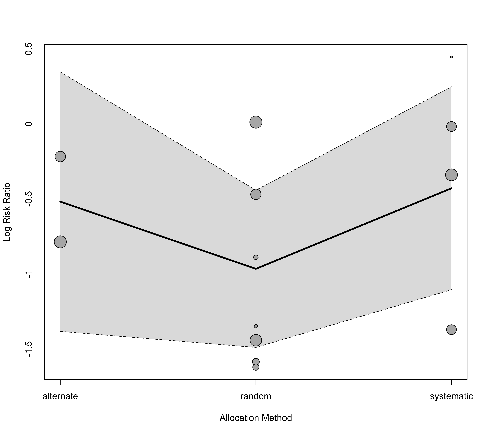
############################################################################